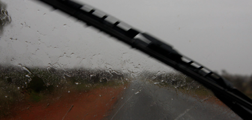

Fra kings canyon til Ayers rock

Ayers rock i regnvejr
tirsdag den 11. december 2007

Der er godt 300 km i bil ned til den store klippe Uluru, som på forhånd har været dømt som et af højdepunkterne på hele vores tur. Stedet er nu en kæmpemæssig helligdom for the aboriginals, og skulle være noget af det mest imponerende i solopgang og ved aftentide. Der er ”Sunset dinners in the desert” for alle over 10 år, så det bliver der ikke noget af, men Camilla har købt et stjernekort, så vi forhåbentlig kan studere nattehimlen og lave vores egne ture i vores super seje firehjulstrækker JIM JIM, som bare kører gennem hvad som helst.
Vi springer frokosten over på resortet og kører afsted. Rygterne siger at der ved Kings creek skulle være et lille burgerjoint, med de lækreste burgere, så der planlægger vi at stoppe. Efter 30 km kommer vi til benzinstationen, og burgerne er virkelig mums. Her er hyggeligt på den autentiske måde. Emuer og kameler trisser rundt på grunden, og det er åbenbart her de lokale hænger ud.
Vi har ikke set nogen kænguruer endnu, men på vejen videre støder vi to gange ind i flokke af vilde kameler. Det lyder måske mærkeligt, men Australien har 1.6 mio. vilde kameler, så de er ikke så sjældne ...
Pludselig begynder det at dryppe, og efterhånden som vi nærmer os Ayers Rock, tager regnen til. Der falder årligt 290 millimeter regn herude, så det er lidt af et sjældent syn. Da vi når frem til vores hotel, står det ned i stænger, og det er koldt - faktisk hundekoldt når man nu har vænnet sig til temperaturer over 30 grader. Vi har sendt alt vores varme tøj hjem i en papkasse i Darwin, så vi er dårligt forberedte på danske tilstande, og det er vi ikke de eneste der er. Det fortsætter med at styrtregne resten af dagen og hele aftenen. Efterhånden står regnen ned alle steder og lobbyen er befolket med fortvivlede gæster hvis værelser er utætte.
Vi er mere heldige med vores værelse. Vi kan sågar lige akkurat (igen) fange stedets Wifi hotspot ude fra terrassen. ikke så hyggeligt i regnvejr, men nok til at vi kan få opdateret vores side og tjekket om der er nyt hjemmefra.
Men de flotte solned- og opgange er der langt til. Vejrudsigten for i morgen er heller ikke for god: max. 20 grader, skyet, regn og storm, det er fuldstændig som at være hjemme igen ...
Nå, vi er jo ikke kommet for at sove. Jeg beslutter at sætte vækkeuret til 5.20 og tage chancen. Der er et udkigspunkt få km fra hvor vi bor, og jeg har jo JIM JIM til at fragte mig derhen.
Kryds fingre.
Pludselig stod det ned i tove. Og det er det stort set blevet ved med.